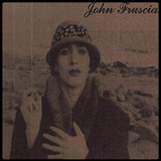

Pierwszy solowy album Johna.
Powstał 8 marca 1994 roku w wytwórni „American Recordings”.
Frusciante uzyskał wiele efektów dźwiękowych za pomocą syntezatora oraz fletu. Materiał na album w całości został nagrany na czterościeżkowym magnetofonie. Album składa się z dwóch nieformalnych części: pierwsza – Niandra Lades została nagrana przed opuszczeniem przez muzyka zespołu Red Hot Chilli Peppers w 1991 roku, w trakcie nagrywania albumu Blood Sugar Sex Magik, druga część – Usually Just a T-Shirt była nagrywana w trakcie odbywania przez Red Hot Chili Peppers trasy koncertowej, tuż po odejściu z niej Frusciante. Album okazał się rozczarowaniem dla muzyka i niewielkim sukcesem komercyjnym. Został wydany w okresie dużego uzależnienia Frusciante od heroiny i kokainy.
Tracklista:
Niandra Lades
- „As Can Be” – 2:57
- „My Smile Is a Rifle” – 3:48
- „Head” (cover piosenki zespołu Beach Arab) – 2:05
- „Big Takeover” (cover piosenki zespołu Bad Brains) – 3:18
- „Curtains” – 2:30
- „Running Away into You” – 2:12
- „Mascara” – 3:40
- „Been Insane” – 1:41
- „Skin Blues” – 1:46
- „Your Pussy’s Glued to a Building on Fire” – 3:17
- „Blood on My Neck From Success” – 3:09
- „Ten to Butter Blood Voodoo” – 1:59
Usually Just a T-Shirt
- Untitled – 0:34
- Untitled – 4:21
- Untitled – 1:50
- Untitled – 1:38
- Untitled – 1:30
- Untitled – 1:29
- Untitled – 1:42
- Untitled – 7:55
- Untitled – 7:04
- Untitled – 0:25
- Untitled – 1:51
- Untitled – 5:27
- Untitled – 1:52